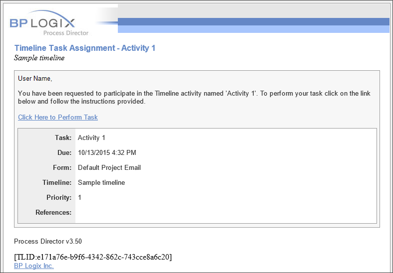

Process Director sends automated email notifications when certain workflow events occur. A workflow definition can specify a custom email template for any User step by referencing an email template stored in the Content List. The email template specified in the step will only be used for that step. To modify the default emails for other events (e.g. step completed) you can create a new template email file. When an email needs to be sent, the system checks for the existence of the appropriate email file listed in the Email Template field of the step and if one is not found, the default email file is used instead.
